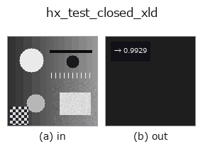

halcon_ext op• 데이터 종류: contour → feature
• 호출: fullseye.apply(img, "hx_test_closed_xld", a=0.5, b=0.5)(2-D 는 이미지 1 장 + 스칼라 노브 2 개 a,b∈[0,1] 모델)
• HALCON 대응: test_closed_xld(의미·매개변수는 HALCON 레퍼런스가 참고가 됩니다)

*그림은 128×128 합성 입력에서 실제로 실행한 출력. 왼쪽이 입력, 오른쪽이 출력. 점군은 위에서 본 산점도(밝기 = z), 1-D 열은 꺾은선, 볼륨은 z 방향 최대값 투영, 동영상은 가운데 프레임, 복소 영상은 진폭이며, 그림이 되지 않는 반환값은 값 자체를 표시한다.*
노브 a 를 훑기(0.1 / 0.5 / 0.9, 다른 노브는 기본값):
▸ hx_test_closed_xld: 노브 a 스윕 (문서 사이트)
*노브 b 는 출력을 바꾸지 않는다(실측: 0.1 / 0.5 / 0.9에서 동일).*
단계(앞에 오는 op → 이 op, 왼쪽에서 오른쪽으로):
▸ hx_test_closed_xld: 단계 (문서 사이트)
닫힌 contour 의 비율(끝점 사이 거리가 임계 미만 = 닫힘. feature).
contour dict의 각 contour에 대해 점 수가 3 이상이고 시작점과 끝점의 유클리드 거리가 tol 이하이면 "닫혀 있다"고 세고, 닫힌 contour 개수를 전체 contour 수로 나눈 비율을 np.float64로 반환한다.
• a → 허용 거리 tol = 1 + a*4(1~5 화소).
• b는 사용하지 않는다.
• contour가 없으면 0.0.
시작점=끝점을 중복시켜 닫는 close_contours_xld의 출력은 거리 0이므로 반드시 닫힘으로 판정된다. hx_clip_end_points나 hx_clip_contours로 끝을 잘라낸 뒤에는 열린 것으로 취급된다. 개별 contour가 어느 것인지는반환하지 않는다(비율만).
• gallery2d_halcon_ext 패밀리 가이드
• 샘플 데이터 카탈로그(DL URL / 라이선스) —— 2-D 는 skimage.data(BSD/public)+ 합성, 3-D 는 실데이터 소스(Stanford/PDS 등)의 DL URL.
• 연산자의 내력·참고문헌 —— 이 연산자 족의 바탕이 된 연구/기법의 출처.
• 알고리즘의 정전(저자·연도)과 용도는 위의 패밀리 사용 가이드에 적혀 있습니다.
아래 프로그램은 실제로 실행됨을 확인했습니다(그림과 같은 입력). Studio 도움말에서는 이 블록이 버튼이 되어 즉시 불러와 실행할 수 있습니다.
threshold 0.50 0.50 sk_find_contours 0.50 0.50 hx_test_closed_xld 0.50 0.50
• gallery2d_halcon_ext — py -3.11 examples/gallery2d_halcon_ext.py
feature 를 입력으로 받는 것)halcon_ext)hx_gen_circle · hx_gen_ellipse · hx_gen_rectangle2 · hx_gen_checker_region · hx_gen_grid_region · hx_gabor · hx_fit_surface1 · hx_fit_surface2
*Provenance: ops.py — 2D 연산자 레지스트리. 이 op 노트는 tools/opdocs.py md 가 자동 생성합니다(직접 편집하지 마세요).*
© 2026 Kazufumi Furuse — Fullseye operator documentation. Licensed under Apache-2.0.